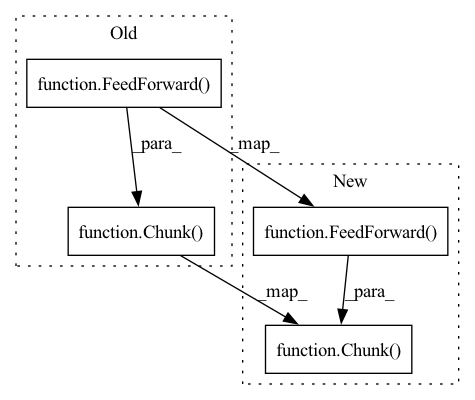

Pattern ID :26481

Before Change
for _, local_heads in zip(range(depth), n_local_attn_heads):
layer = nn.ModuleList([
PreNorm(dim, SelfAttention(dim, heads, causal, one_kv_head = one_kv_head, blindspot_size = blindspot_size, n_local_attn_heads = local_heads, local_attn_window_size = local_attn_window_size, psi_fn = psi_fn)),
PreNorm(dim, Chunk(ff_chunks, FeedForward(dim), along_dim = 1))
])
layers.append(layer)
After Change
layer_num = ind + 1
use_pkm = layer_num in cast_tuple(pkm_layers)
parallel_net = Chunk(ff_chunks, FeedForward(dim), along_dim = 1) if not use_pkm else PKM(dim)
layer = nn.ModuleList([
PreNorm(dim, SelfAttention(dim, heads, causal, one_kv_head = one_kv_head, blindspot_size = blindspot_size, n_local_attn_heads = local_heads, local_attn_window_size = local_attn_window_size, psi_fn = psi_fn)),
In pattern: SUPERPATTERN
Frequency: 3
Non-data size: 4
Instances
Fragment ID: 79462013
Project Name: lucidrains/linear-attention-transformer
Commit Name: ffeb7c194ff9a8737e209d1f11e7de55ff55f64d
Time: 2020-06-08
Author: lucidrains@gmail.com
File Name: linear_attention_transformer/linear_attention_transformer.py
M Class Name: LinearAttentionTransformer
N Class Name: LinearAttentionTransformer
M Method Name: __init__(17)
N Method Name: __init__(15)
M Parent Class: nn.Module
N Parent Class: nn.Module
M File Name: linear_attention_transformer/linear_attention_transformer.py
N File Name: linear_attention_transformer/linear_attention_transformer.py
M Start Line: 326
M End Line: 326
N Start Line: 314
N End Line: 335
'>
Before Change
for _, local_heads in zip(range(depth), n_local_attn_heads):
layer = nn.ModuleList([
PreNorm(dim, SelfAttention(dim, heads, causal, one_kv_head = one_kv_head, blindspot_size = blindspot_size, n_local_attn_heads = local_heads, local_attn_window_size = local_attn_window_size, psi_fn = psi_fn)),
Chunk(ff_chunks, PreNorm(dim, FeedForward(dim)), along_dim = 1)
])
layers.append(layer)
execute_type = ReversibleSequence if reversible else SequentialSequence
After Change
for _, local_heads in zip(range(depth), n_local_attn_heads):
layer = nn.ModuleList([
PreNorm(dim, SelfAttention(dim, heads, causal, one_kv_head = one_kv_head, blindspot_size = blindspot_size, n_local_attn_heads = local_heads, local_attn_window_size = local_attn_window_size, psi_fn = psi_fn)),
PreNorm(dim, Chunk(ff_chunks, FeedForward(dim), along_dim = 1))
])
layers.append(layer)
'>
Fragment ID: 79462016
Project Name: lucidrains/linear-attention-transformer
Commit Name: 3ec94bd694f68c2eb6e69dbc4b65c6602175c929
Time: 2020-06-08
Author: lucidrains@gmail.com
File Name: linear_attention_transformer/linear_attention_transformer.py
M Class Name: LinearAttentionTransformer
N Class Name: LinearAttentionTransformer
M Method Name: __init__(14)
N Method Name: __init__(14)
M Parent Class: nn.Module
N Parent Class: nn.Module
M File Name: linear_attention_transformer/linear_attention_transformer.py
N File Name: linear_attention_transformer/linear_attention_transformer.py
M Start Line: 313
M End Line: 313
N Start Line: 313
N End Line: 313
'>
Before Change
for _ in range(depth):
layers.append(nn.ModuleList([
SinkhornSelfAttention(dim, causal = causal, heads = heads, buckets = buckets, sinkhorn_iter = sinkhorn_iter, n_sortcut = n_sortcut, temperature = temperature),
Chunk(ff_chunks, FeedForward(dim), along_dim=1)
]))
self.layers = ReversibleSequence(layers)
def forward(self, x, input_mask = None):
x = torch.cat([x, x], dim = -1)
After Change
for _ in range(depth):
layers.append(nn.ModuleList([
WithNorm(nn.LayerNorm, dim, SinkhornSelfAttention(dim, causal = causal, heads = heads, buckets = buckets, sinkhorn_iter = sinkhorn_iter, n_sortcut = n_sortcut, temperature = temperature)),
Chunk(ff_chunks, WithNorm(nn.LayerNorm, dim, FeedForward(dim)), along_dim=1)
]))
self.layers = ReversibleSequence(layers)
def forward(self, x, input_mask = None):
x = torch.cat([x, x], dim = -1)
'>
Fragment ID: 79462018
Project Name: lucidrains/sinkhorn-transformer
Commit Name: 75c1346f2112fdeadd5567fe5391ad05a8a1a467
Time: 2020-04-03
Author: lucidrains@gmail.com
File Name: sinkhorn_transformer/sinkhorn_transformer.py
M Class Name: SinkhornTransformer
N Class Name: SinkhornTransformer
M Method Name: __init__(10)
N Method Name: __init__(10)
M Parent Class: nn.Module
N Parent Class: nn.Module
M File Name: sinkhorn_transformer/sinkhorn_transformer.py
N File Name: sinkhorn_transformer/sinkhorn_transformer.py
M Start Line: 279
M End Line: 284
N Start Line: 279
N End Line: 284